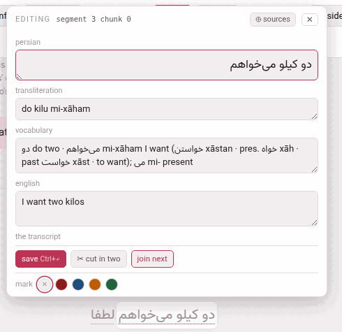

Editing a phrase in the player
A video’s writing door is the gloss cloud itself, and it needs no mode: point at a phrase and the cloud is already there. It carries two things that write into the video — a row of colours, and ✎ edit. Both save straight into the video’s annotations.json; there is nothing to rebuild, because the player reads that file afresh on every visit, so the phrase is redrawn in place at once and a reload shows the same.
1. The four colours#
At the foot of every cloud is the mark row: a ✕ and four dots — red, blue, orange, green. One click marks the phrase in that colour, and it wears the colour in the transcript from that moment; ✕ takes the mark off. It is a reading gesture, not an edit, so it is one click and never sits behind the ✎.
They are the reading editions’ own four colours, spelled the same and drawn in the same shades. Nothing reads them: no tool does anything with a colour but check that it is one of the four, no card carries one, no page filters by one. It is your own mark on the text — this is the word I did not know, this is the construction I keep missing.
A colour, like every edit made in the player, is written into annotations.json, and nothing else on the shelf holds a gloss: the answer a video was built from is folded in once, while the video is being added, and the batches are dropped there and then (A video’s files).
2. The form#
✎ edit, in the row with + card and ⧉ copy, turns the cloud into a form. Its head says which phrase it is, the way the checker names it — editing segment 3 chunk 0 — so that a refusal about “segment 3 chunk 0” is recognisably about this one.

The fields are named the way this video’s language names them:
| Field | Holds |
|---|---|
| the language’s name (persian, japanese, italian…) | the phrase’s text, in the language’s own face and direction |
| words (Japanese, Chinese) | the phrase divided into words, each with its reading — below |
| kana (Japanese) | the reading of the whole phrase |
| transliteration, pronunciation, rōmaji or pinyin | its romanisation, called what the language calls it |
| vocabulary | the vocabulary line: the dictionary form, the root, what it is made of — plain text, or in the books’ entries (below) |
| the gloss language’s name (english, italian…) | what this phrase’s own words say, in the order of the captions — a gloss, not a translation of the sentence (What the meaning says) — called meaning when the video is glossed in the language it teaches |
| note | the aside under the meaning — what the automatic transcript really heard, a cultural point; on every phrase, empty until somebody writes one (below) |
| the transcript | the one checkbox: below |
Target-language boxes take the language’s face and direction; the vocabulary, the meaning and the note take the gloss language’s, so an Arabic meaning runs right to left inside this left-to-right form.
Under the fields: save (Ctrl+↵, or ⌘+↵) and delete gloss beside it (below), ✂ cut in two, join next, and — from the second phrase of a caption on — join previous; those three move where a phrase ends (Cutting and joining). The colour row stays at the foot. ⊕ sources in the head opens the column described below, and ✕ or Esc closes the form.
While the form is open the cloud stops being a hover: it stays when the pointer leaves it, and pointing at another phrase does not wipe what you have half typed. The video pauses, because a page that follows the speaker would otherwise scroll the phrase away from under your hands; it plays on when you close the form, if it was playing.
What is saved is only what you changed — so a refusal names that field and not every field the phrase has — and nothing changed is all a press says when you changed nothing. The server trims every value, and an emptied box removes its field (absent and empty mean the same thing to everything that reads the file). After saved ✓ the boxes show what is now on disk.
One field is deliberately not in the form: plain. It belongs to whoever authored the video — it decides whether a phrase is asked for a gloss at all — so it is edited in the file (A video’s files).
One box at a time is fine. A phrase nobody has glossed opens with its boxes empty, and you may fill them in any order, over as many sittings as you like: a meaning saved before its transliteration is saved as it is, and the checker lists the phrase until the rest is written. What is refused is the opposite — emptying, on its own, a box the language requires, which would turn a finished gloss into a half-finished one (the refusals, below).
The vocabulary box#
A vocabulary line is plain text, as it always was — سیب sib apple · چند čand how much — or it is written in the books’ entries, the same four macros a book’s line uses. Both are fine in every language, and a video glossed before this existed looks exactly as it did.
The box has what the book’s chunk sheet has. Over it, reads as shows the line the way the cloud will set it: a plain line as text, a line in the books’ entries drawn as the reader draws it — each word of the language in its own script and face, its romanisation in italics, a verb with the labels its language prints. While a line is not finished it says what is short (\dw needs 2 groups in braces {…} and has 1). Under the box, four buttons write an entry, its braces in place and the cursor in the first:
| Button | Writes | Use it for |
|---|---|---|
word \dw{}{} | \dw{word}{romanisation} what it means | a word as a dictionary lists it — any word that is not a verb |
verb \vb{…} | \vb{verb}{rom}{form2}{rom}{form3}{rom}{meaning} | a verb with its principal parts — every verb; the three forms are the language’s own |
compound \bw{}{}{} | \bw{word}{romanisation}{the phrase} | the base word of a compound verb, run straight onto the verb’s entry with nothing between them |
word in a meaning \pw{} | \pw{word} | a word of the language inside a meaning, kept the right way round |
Each button says what it is for before you press it. Point at one, or Tab to it, and a line opens under the buttons: what kind of entry it is and when to use it rather than another, what goes in each pair of braces, in order (for a verb, the language’s own three forms and the two labels it prints), and an example in this video’s language, drawn the way it will look. The button’s tooltip says the same.
Entries are parted by ;. Beyond the four macros, \textit, \emph and \nobreak are allowed, and nothing else spelled with letters. A video’s line never reaches LaTeX, so % & # _ $ are ordinary characters in it, unlike in a book. A card made of the phrase takes the line as plain text.
The note#
A phrase’s note is the aside under its meaning in the cloud: what the automatic transcript really heard, a cultural point. A model that glosses a video leaves one only when something needs saying — a slip it noticed in the transcript, what was really said — and a hand may write one. It is no gloss: a phrase that has only a note still says nothing glossed yet, and delete gloss leaves it where it is.
It is yours to edit, and its box is on every phrase, so that a note can be written as well as changed: one row that grows with what is in it, and under it a line that says how a note is taken off — empty it. There is no button for that, because an emptied box is how every field of this form is cleared; the note’s key goes out of the file with it. The note is saved with the rest, down the same route and under the same rules: only what you changed is sent, the text is trimmed (a note of nothing but spaces is no note), and the file changes as a hand’s edit would have changed it — taking a note off removes the line it was written on, and nothing else of the file moves.
The usual reason to open it is a slip a model has flagged. If the transcript says garlic where the speaker said apple, and the note says so, mend the phrase with the transcript box (below), and then empty the note, which is stale: both in the same form.
A cut leaves a phrase’s note on its first half, and a join puts two notes end to end (Cutting and joining): the sheet for either has no note box, and neither loses a note. A card made of the phrase carries its note in the card’s notes. To see where the notes are before opening any phrase, switch on ✱ notes in the bar (The player).
3. Deleting a gloss#
delete gloss, beside save, takes the phrase’s whole gloss off in one click: its transliteration, its kana (in Japanese), its vocabulary and its meaning. It asks nothing first, because it can be undone. The text, the colour, the words, the note and the transcript mark stay; what is left is a phrase with no gloss. In Japanese and Chinese that is one step emptier than a phrase nobody has touched: a drafted phrase holds the reading proposed from its words (the kana, or the pinyin), and delete empties the reading rather than put that proposal back. The form says gloss deleted, and an undo delete button appears: it writes the deleted gloss back, down the same route as a save.
The page keeps the deleted gloss until it is reloaded, not longer: close the form, open the same phrase again later, and undo delete is still there; reload the player, and it is gone. The button is not offered on a phrase marked plain, and is greyed out on one that has no gloss as saved — a reading that still says exactly what its words propose is none.
It is how a gloss is written again from nothing — by you, or by an LLM: a deleted gloss counts as no gloss, so the next prompt of gloss with an LLM asks for this phrase, and the answer may fill it (Glossing captions with an LLM). It is also the one way to empty a box the language requires.
4. When YouTube heard wrong#
A caption’s text must equal its line of transcript.txt: the check that the phrases of a caption, joined back, reproduce that caption is what stops a model — or a careless edit — quietly rewriting the video. So the text box is narrow on purpose: you may add the vowel marks to a Persian or Arabic phrase (the marks are set aside before the comparison), but not change a letter or a stop of it.
But the pasted transcript is only what YouTube heard, and it is sometimes simply wrong: a name misheard, a particle dropped. For that one case the form ends with the transcript: this phrase need not reproduce transcript.txt. Ticked and saved together with the correction:
- the edit that changes the words is written instead of refused;
- the caption’s text is rewritten from its own phrases;
- the checker reports the caption as not checked against transcript.txt — a warning counting such captions, not an error.
It frees the whole caption, because the whole caption is what is compared: one phrase departing takes its caption with it. Every other caption is checked as before. To go back, put the words as the transcript has them and untick the box in the same save; unticking alone, while the words still differ, is refused — segment 1: text differs from transcript.txt, with the two texts under it. When a save is refused because the words differ, the form scrolls this box into view.
A model that noticed the slip may have left a note about it; once the phrase is mended the note is stale, and emptying its box in the same form takes it off (The note).
5. Japanese and Chinese: the words#
A Japanese or Chinese phrase carries its words as a line of its own — 今日(きょう) は 天気(てんき) が — which is what the reading over each word, I know this and the dictionary go by. The form draws that line as a strip under the text box: one chip per word, the word on top and its reading in a box underneath.
| To | Do |
|---|---|
| cut a word in two | click between two of its characters, where the scissors appear |
| join two words | the ⊕ between them; their readings run together |
| move where a word begins | click the word and press ← or →: a character at a time |
| correct a reading | type in the box under the word |
| write the line itself | edit as text: the line as it is stored |
| start again | propose asks the machine for its division again (SudachiPy for Japanese, pkuseg and pypinyin for Chinese, when the server has them); divide by hand starts a phrase that has no words from its whole text as one word |
Under the chips the strip says what is wrong with the line. An error — the words do not join back into the text — refuses the save, as the checkers would. A warning does not: a kanji word with no reading, or the words’ readings run together disagreeing with the phrase’s own kana or pinyin — which in a text read out of its written order (kanbun) they rightly do; the checkbox on video info quiets it. The line is written with the rest of the phrase, by save, and not before; changing the text or the reading redraws the strip against them.
6. The sources beside the fields#
⊕ sources opens a column to the left of the fields, and the form grows to hold it: Everything the toolbox already knows about this phrase. Nothing here is a gloss and nothing writes itself: each line has the buttons that put it into a field. Reading them in the cloud and retyping them was the whole of the work before, and retyping is where a romanisation loses a macron. Whether the column is open is remembered.
It holds four blocks, in this order:
- dictionary
- — each entry for the phrase’s words, with romanisation → (into the transliteration), → vocabulary (an entry added to the vocabulary line, in the books’ form and parted from what is there by
;— a\dwfor a word; for a verb the\vbof its lemma with its other forms, the video’s colloquial present inside the meaning’s parenthesis where the language has one, and — where the phrase holds a form of the verb that the\vbdoes not print — that form named after it,; here \pw{…}) and meaning →. Where the recipe for a verb could not fill something the language needs, the row and the button say what is still to write. Where the dictionary defines its words in their own language and a translation model is there, an in english switch (named after the gloss language) over the block puts each sense into the gloss language, with its own → vocabulary and meaning →. - a machine’s reading
- — the caption translated by the model on this machine, with the marked words → meaning (the part that seems to be this phrase’s) and the whole caption → meaning; or no translation model for this pair.
- sentences somebody translated
- — from the corpus, each with its meaning →; or nothing in the corpus is about this phrase.
- external chatbot
- — for any chatbot you like, with nothing installed. Ask LLM copies a prompt holding the caption, the captions around it, what the dictionary says of its words and every example sentence the corpus has; paste the chatbot’s answer into the box and press Use translation (or Ctrl+↵). The translation then appears with the same buttons the model’s has, and it is reused for every phrase of the same caption.
A button adds to its field rather than replacing it, since a vocabulary line is built entry by entry. Nothing is saved until save. What a verb’s draft does, and where it is weak, differs from one language to the next: What the verb draft does in each language, in the book’s page on the same sidebar.
The gloss and the fluent translation#
What the machine’s reading and Ask LLM bring is a fluent translation of the whole caption, and that is what they are for: to understand it. The meaning you save under a phrase is another thing, a gloss: it says what that phrase’s own words say, in the order of the captions, so that read in a row the meanings are stiff, and may be poor English, and you can point from each word of them to the word it renders and see how the language builds its sentence. That is why the marked words → meaning and the whole caption → meaning only start the box: they put in a share of a fluent sentence, and it is yours to cut down to what this phrase’s words say and to bring into line with the vocabulary line. It is also why Ask LLM asks for a translation and stays so, while gloss with an LLM asks a chatbot for glosses (What the meaning says).
7. The refusals#
Every save goes through check_annotations.py before anything is written, and is refused — in the checker’s own words, shown at the foot of the form — if it brings in an error the file did not already have. Brings in, not has: an editor that would not work until the video was finished could not be how the video gets finished. And a box still empty beside the ones you fill is never counted: a phrase half glossed is the middle of the work. A refused save writes nothing at all; the form stays open with your text in it.
| It says | Which means |
|---|---|
| segment 1 (start 6): chunks do not reproduce the text (with the two texts under it) | the text changed. Marks are set aside first, so vowelling goes through, and changing a word or a stop does not. Moving a word to the next phrase is not one phrase’s edit: it is a boundary moving (Cutting and joining). A misheard word is what the transcript box is for |
| segment 4 (start 21) chunk 1: a glossed phrase needs its meaning – check_annotations.py calls an empty en an error; empty every box of the gloss (“delete gloss”) to take the whole gloss off | you emptied, on its own, a field the language requires. The same goes for the transliteration where the language romanises every phrase (Persian romanises every phrase, so tr cannot be emptied on its own) and for the kana of a Japanese phrase. Emptying every box at once is allowed — that is delete gloss — and the vocabulary may always be emptied. Filling a box is never refused for what is still empty beside it |
| segment 2 (start 12) chunk 1: the words do not reproduce the text: … | Japanese, Chinese: the text changed and the words did not — change both in one save |
| segment 3 (start 15) chunk 0: voc uses \foo, which is not one of the books’ vocabulary macros – a line may hold \bw, \dw, \emph, \nobreak, \pw, \textit, \vb and nothing else | a vocabulary line with a macro in it is checked as a book’s is: only those macros, braces that balance, and every macro its groups (voc leaves 1 brace open, voc closes a brace it never opened, \vb needs 7 groups in braces and has 5). A line with no macro in it is plain text and is never looked at |
| no chunk 3 in segment 4: there are 2 | the page is out of date: the file was changed elsewhere since it was drawn. Reload rather than let a neighbouring phrase be edited by mistake |
| the edit was refused / the server did not answer | the server is stopped or could not be reached; nothing was written |
Two more exist for requests made by hand, never by the page: colour ‘purple’ is not one of red, blue, orange, green, and cannot set ‘plain’ on a chunk: fa, words, kana, tr, voc, en, note, col, free – plain decides whether a phrase is asked for a gloss at all, so it belongs to whoever authored the video. A mistyped field name gets the same list of fields, without the reason.